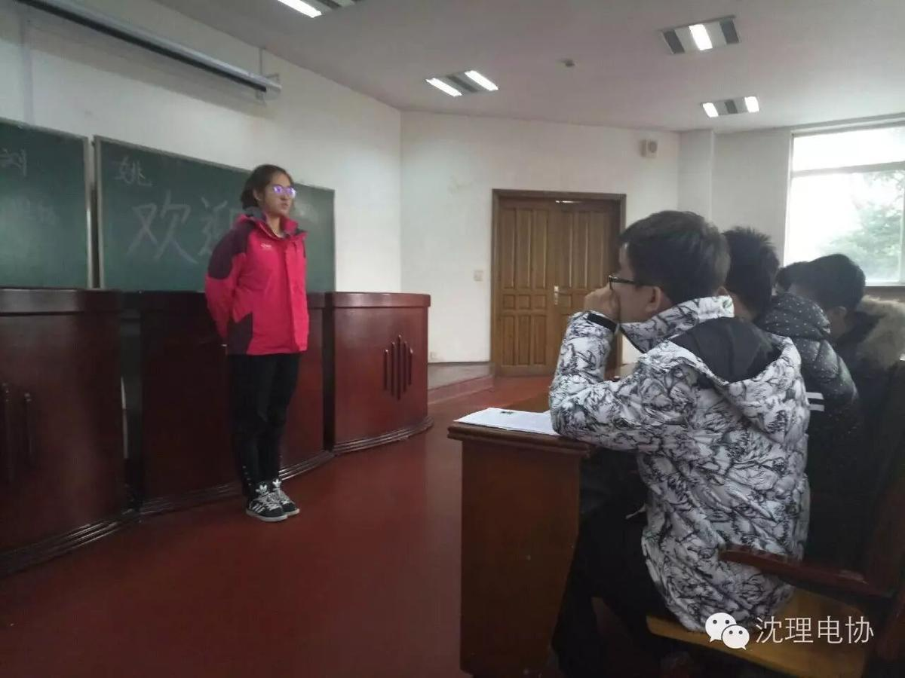
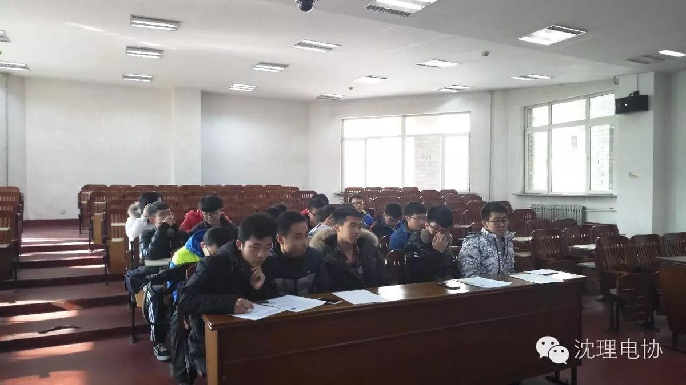
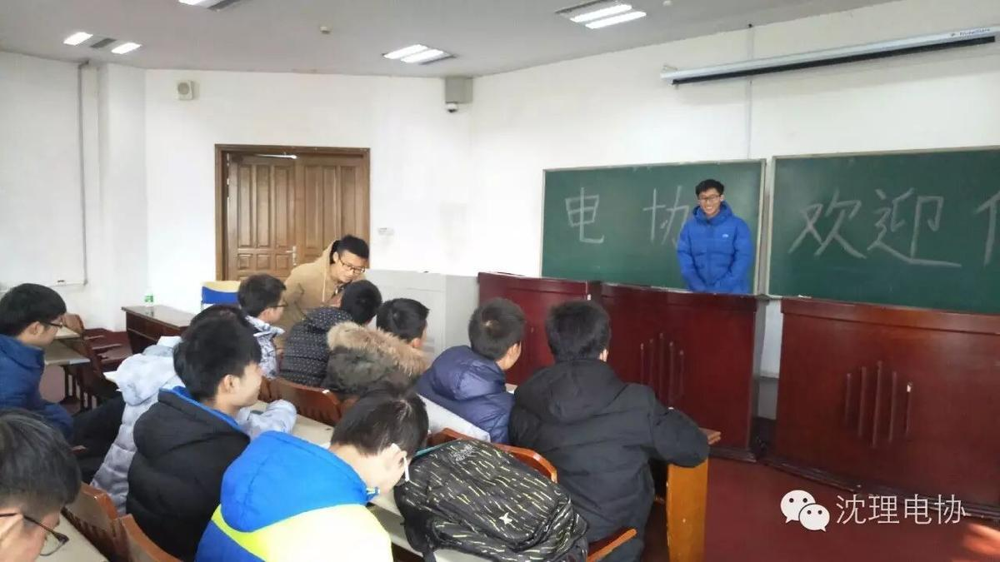
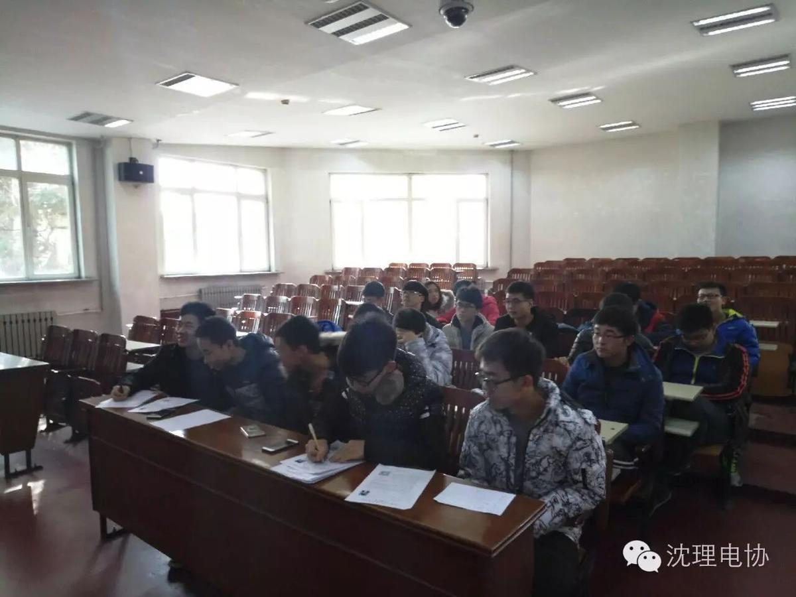
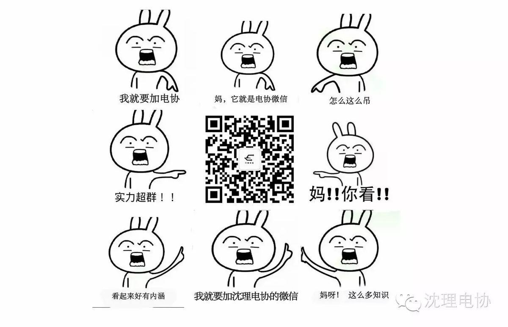

电协2016干事招新面试及入选名单
电协2016年干事招新面试及名单
11月20日，电子技术与应用协会
2016年干事招新面试会在信息楼
128进行。电协大三、
大二负责人参与了干事
面试选拔活动。
此次干事招新活动将会给电协行政管理部门带来新鲜的血液，也将会推动电协的下一步发展。
现场照片




| 2016电协干事名单 | |||
| 外联部 | |||
| 姓名 | 性别 | 学号 | 专业 |
| 崔士航 | 男 | 1603060133 | 通信工程 |
| 李毅 | 男 | 1603060325 | 通信工程 |
| 任健樟 | 男 | 1603050117 | 计算机科学与技术 |
| 宋宇航 | 女 | 1603030205 | 电子信息工程 |
| 王博 | 女 | 1606010307 | 自动化 |
| 徐颖文 | 男 | 1606020333 | 测控技术与仪器 |
| 组织部 | |||
| 姓名 | 性别 | 学号 | 专业 |
| 陈丽香 | 女 | 1603030107 | 电子信息工程 |
| 李昊 | 男 | 1603130125 | 网络工程 |
| 李杰 | 女 | 1602020106 | 车辆工程 |
| 李逸滢 | 女 | 1603060111 | 通信工程 |
| 刘佳畅 | 男 | 1606010418 | 自动化 |
| 邵凯 | 男 | 1603060136 | 通信工程 |
| 王枭 | 男 | 1603030112 | 电子信息工程 |
| 李雯夷 | 女 | 1609060305 | 光电信息科学与工程 |
| 王致博 | 男 | 1603070206 | 电子信息科学与技术 |
| 财务部 | |||
| 姓名 | 性别 | 学号 | 专业 |
| 代宝昊 | 男 | 1603030115 | 电子信息工程 |
| 古明瑞 | 男 | 1605010508 | 材控 |
| 刘根绮 | 男 | 1601011109 | 机自 |
| 田毅 | 男 | 1603070209 | 电子信息科学与技术 |
| 熊长林 | 男 | 1606020117 | 测控技术与仪器 |
| 张婧睿 | 女 | 1603060202 | 通信工程 |
| 信息部 | |||
| 姓名 | 性别 | 学号 | 专业 |
| 丁宇亭 | 女 | 1603030101 | 电子信息工程 |
| 范淼 | 男 | 1603030130 | 电子信息工程 |
| 关聪 | 男 | 1603050120 | 计算机科学与技术 |
| 金磊 | 男 | 1603030129 | 电子信息工程 |
| 康宁 | 男 | 1603060135 | 通信工程 |
| 刘舒宇 | 男 | 1603070213 | 电子信息科学与技术 |
| 潘俊儒 | 男 | 1603060137 | 通信工程 |
| 王宁 | 男 | 1603070105 | 电子信息科学与技术 |
| 王喆 | 男 | 1603060116 | 通信工程 |
| 姚鸿权 | 男 | 1606010335 | 自动化 |
| 张婉娱 | 女 | 1603030206 | 电子信息工程 |
| 白金朋 | 男 | 1603070112 | 电子信息科学与技术 |
| 赵玉泉 | 男 | 1603060332 | 通信工程 |
| 人事部 | |||
| 姓名 | 性别 | 学号 | 专业 |
| 曹玉莹 | 女 | 1603030109 | 电子信息工程 |
| 杜景浩 | 男 | 1603060121 | 通信工程 |
| 付莉莉 | 女 | 1603050104 | 计算科学与技术 |
| 高文文 | 女 | 1603030108 | 电子信息工程 |
| 李月 | 女 | 1604030211 | 国际经济与贸易 |
| 刘少尚 | 男 | 1611060214 | 武器发射工程 |
| 牛栋鑫 | 男 | 1602050106 | 能源与动力工程 |
| 孙嘉茜 | 女 | 1603030104 | 电子信息工程 |
| 王建宇 | 男 | 1609050230 | 应用统计学 |
缘聚电协
不忘初心，方能始终

编/马忠臣 高天
摄/高新华
